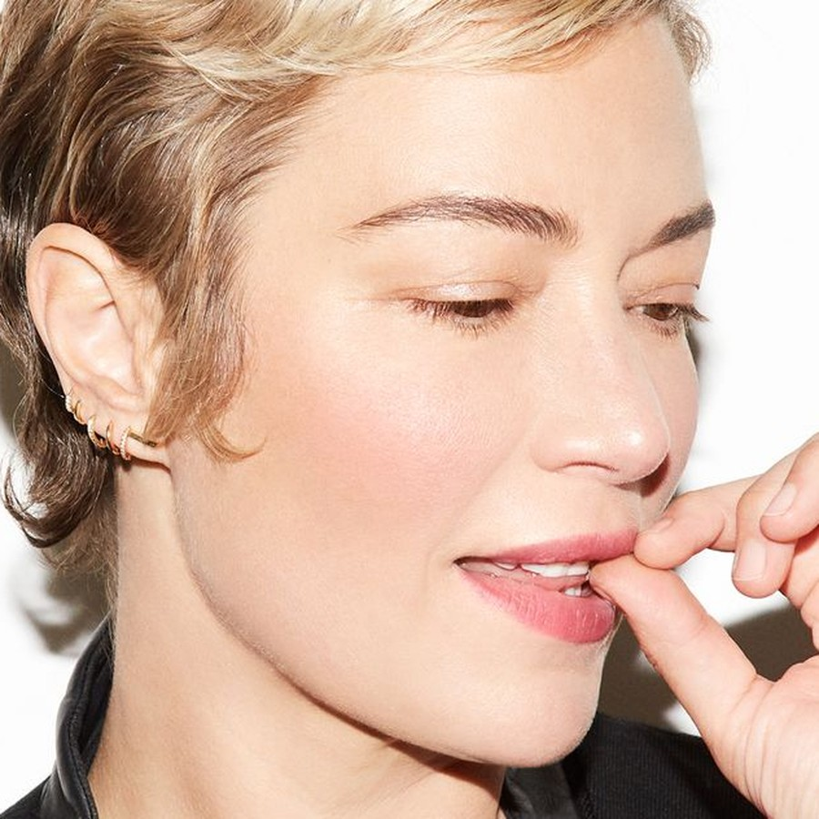

Mélanie Inglessis is a Los Angeles-based makeup artist whose work moves between celebrity, fashion, editorial, advertising and film. Known for luminous, light-bearing skin and a refined edge, she studied at the London College of Fashion before developing her technique alongside leading artists including Charlotte Tilbury, Pat McGrath and Val Garland. Her current client roster includes Ana de Armas, Jenna Ortega, Olivia Wilde, Kate Hudson, Karlie Kloss, Ruth Negga, Rosamund Pike and Natalie Portman. Represented worldwide by Forward Artists, she continues to work internationally.
French-born and Los Angeles–based, Mélanie brings a music-subculture sensibility — psychobilly to rockabilly — into red-carpet and editorial beauty, always with luminous skin at the center.
Beauty media regularly turns to her as both a celebrity technician and an expert voice on gothic, alternative and soft-goth eye makeup trends.
Beyond the carpet, her motion and campaign work spans Giorgio Armani Beauty, Estée Lauder, La Mer, L’Oréal Paris, Netflix and music videos including Britney Spears.
Biography synthesized from the Forward Artists profile and verified press for this independent portfolio concept. Not an official endorsement.